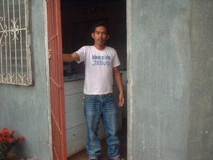
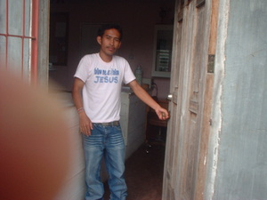

lukat  
/lukat/
v_rt.
“open”
cf. lekat
vt.
for someone (eglukat, miglukat/inlukat, lukat, agent, eg><ø-) to open something (such as a door) (eglukatan, inlukatan/miglukatan/piglukatan, lukati, theme, eg><an-)
Eglukat a te gumawan.
I will open up the door.
Eng. open; unlock?; let in; allow in
Tag. buksán
Ceb. bukas
OCM: Housekeeping (356)
Online dict status: -
Usage level: L
1.
v.
for something (egkalukatan, nalukatan, malukati, egkA><an-) (for a doorway) to be open (igkalukati, ingkalukati, reason, ig><i-)
Nalukatan ka gumawan niyu.
Your door is open.
Eng. open
Tag. bukás; abyerto
Ceb. bukás; abyerto; tukás; ukáb
Ilo.: bukás; silulukat
OCM: Housekeeping (356)
Online dict status: -
Usage level: L
2.
v.
for a battery (eglukatan, inlukatan/miglukatan/piglukatan, lukati, eg><an-) to be flat
Eng. flat battery; dead battery; battery, dead
Online dict status: -
Usage level: L
Updated by: RJH,JLM,RJH,QDL,RAA
Last updated: 26/Oct/2009
"peglukat" in song "Dakel ne geyinawa"
This page last updated: 19/May/2012
Copyright © 2009-2010, Matigsalug Language Christian Association, Inc